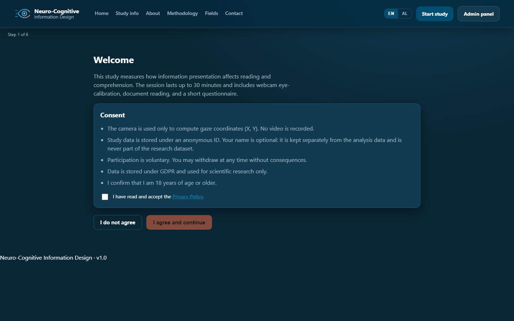
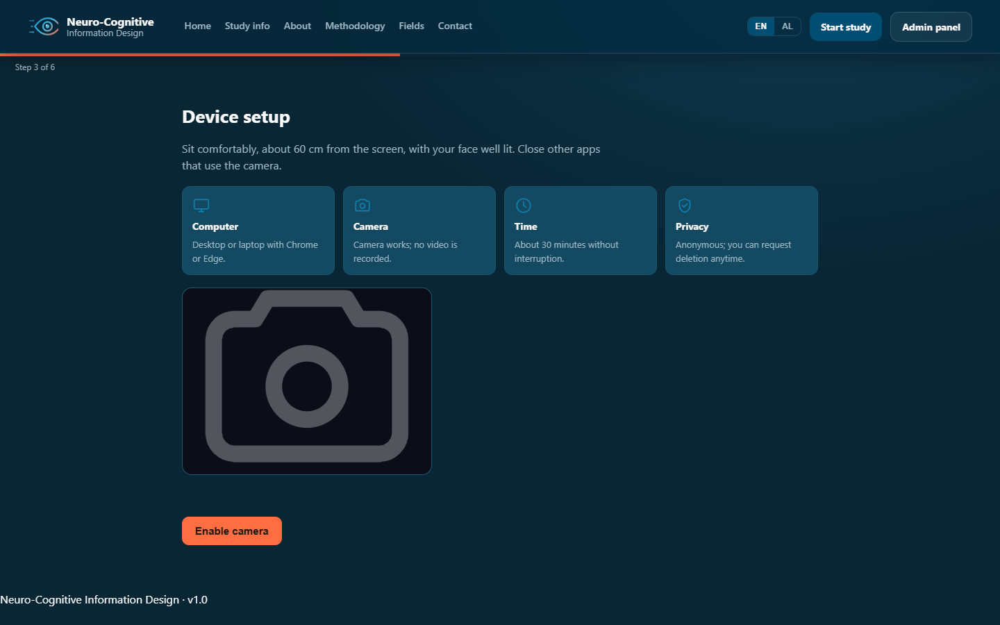
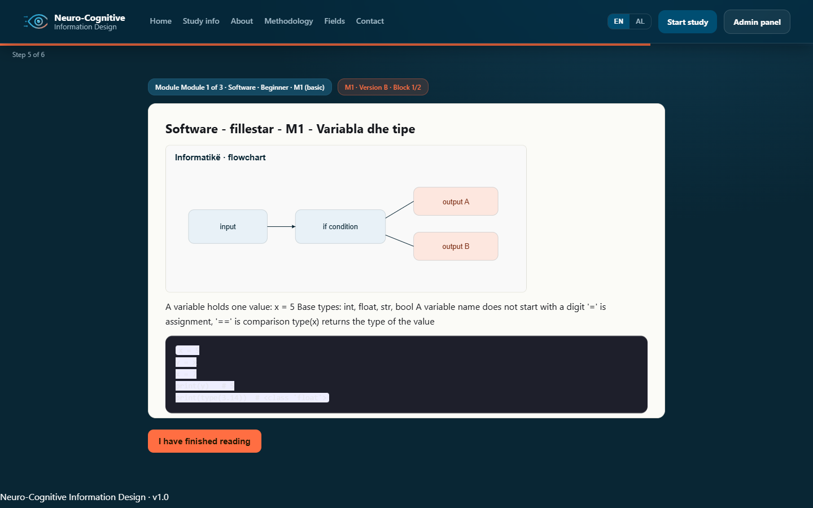
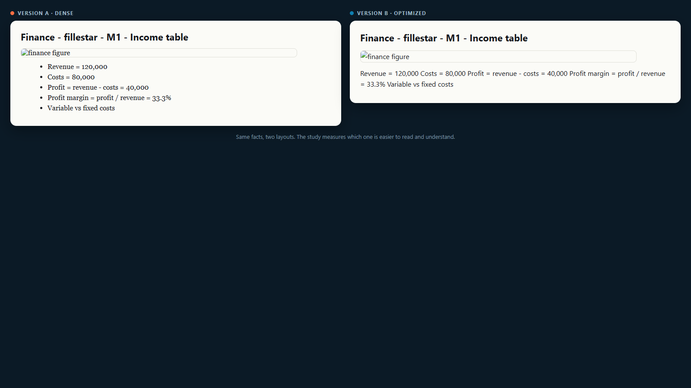

Join the readability study
What you need
Desktop or laptop
Chrome or Edge
Working webcam
A quiet, well-lit room
Age 18+
How it works

1. Consent

2. Setup

3. Reading
Two layouts of the same facts
